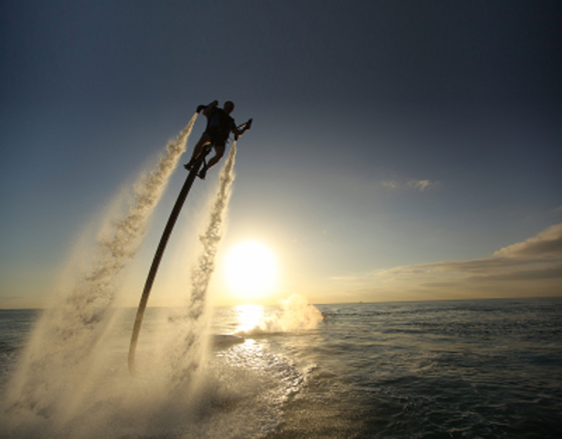
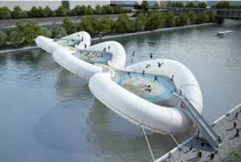

Different Things To Expeirence

Water Jetpacking
You can fly in the air up to 35 feet. The gaint hose force-feeds water into the propulsion pack. You can do horizontal and vertical zig-zags, twirls, backflips, and anything your heart desires.

The Glacier Express
The Glacier Express is one of the most famous railways in the world that expands from Zermatt to St. Moritz in about 7 hours. It travels through mountain landscapes, valleys, 91 tunnels, and 291 bridges. It is located in Switzerland that only operates during the day.

Trampoline Brigde
You could cross the river Seine on a normal stone bridge, or... you could go on the most longest and fun bridge of your life! These floating platforms are formed as arches with three 30 meter trampolines. There are also two stairs on each side or slides for those who are in a rush to get down(or lazy to use the stairs).